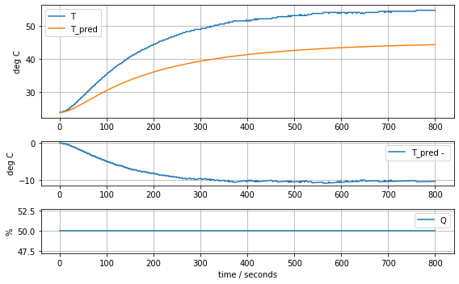
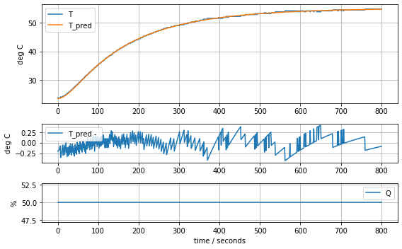
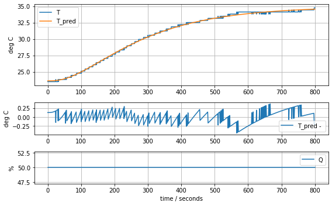

import matplotlib.pyplot as plt
import numpy as np
import pandas as pd
from scipy.integrate import odeint
from scipy.optimize import minimizeModel Identification: Fitting models to data
Initializations
Reading data
The following cell reads previously stored experimental step response data.
df = pd.read_csv("tclab-data.csv")
t = np.array(df["Time"])
T1 = np.array(df["T1"])
T2 = np.array(df["T2"])
Q1 = np.array(df["Q1"])
Q2 = np.array(df["Q2"])Plotting function
The following simple data plotting function is used in this notebooke to compare experimental data to model predictions.
def plot_data(t, T, T_pred, Q):
fig = plt.figure(figsize=(8,5))
grid = plt.GridSpec(4, 1)
ax = [fig.add_subplot(grid[:2]), fig.add_subplot(grid[2]), fig.add_subplot(grid[3])]
ax[0].plot(t, T, t, T_pred)
ax[0].set_ylabel("deg C")
ax[0].legend(["T", "T_pred"])
ax[1].plot(t, T_pred - T)
ax[1].set_ylabel("deg C")
ax[1].legend(["T_pred - "])
ax[2].plot(t, Q)
ax[2].set_ylabel("%")
ax[2].legend(["Q"])
for a in ax: a.grid(True)
ax[-1].set_xlabel("time / seconds")
plt.tight_layout()
plot_data(t, T1, T1, Q1)
plot_data(t, T2, T2, Q2)Empirical Models
Empirical modeling is a process in which we attempt to discover models that accurately describe the input-output behavior of a process without regard to the underlying mechanisms.
First-order linear model
A first-order transfer function is modeled by the differential equation
\[ \tau \frac{dy}{dt} + y = K u\]
where \(y\) is the ‘deviation’ of the process variable from a nominal steady state, and \(u\) is the deviation in manipulated variable from a nominal steady state. For the temperature control lab we will assign the deviation variables as follows:
\[\begin{align*} y & = T_1 - T_{ambient} \\ u & = Q_1 \end{align*}\]
Parameter \(K\) is the process gain which can be estimated as the ratio of the a steady-state change in \(y\) due to a steady-state change in \(u\). Parameter \(\tau\) is the first-order ‘time constant’ which can be estimated as the time to achieve 63.2% of the steady-state change in output to due a steady-state change in \(u\).
def model_first_order(param, plot=False):
# access parameter values
K, tau = param
# simulation in deviation variables
u = lambda ti: np.interp(ti, t, Q1)
def deriv(y, ti):
dydt = (K*u(ti) - y)/tau
return dydt
y = odeint(deriv, 0, t)[:,0]
# comparing to experimental data
T_ambient = T1[0]
T1_pred = y + T_ambient
if plot:
print("K =", K, "tau =", tau)
plot_data(t, T1, T1_pred, Q1)
return np.linalg.norm(T1_pred - T1)
param_first_order = [0.62, 180.0]
model_first_order(param_first_order, plot=True)K = 0.62 tau = 180.024.649520390255464results = minimize(model_first_order, param_first_order, method='nelder-mead')
param_first_order = results.x
model_first_order(param_first_order, plot=True)K = 0.6370841237049034 tau = 199.861739770126720.651093155278453
First-order linear model with time delay
The code cell below
def model_first_order_time_delay(param, plot=False):
# access parameter values
K, tau, tdelay = param
# simulation in deviation variables
u = lambda ti: np.interp(ti, t, Q1, left=0)
def deriv(y, ti):
dydt = (K*u(ti-tdelay) - y)/tau
return dydt
y = odeint(deriv, 0, t)[:,0]
# comparing to experimental data
T_ambient = T1[0]
T1_pred = y + T_ambient
if plot:
print("K =", K, "tau =", tau, "tdelay =", tdelay)
plot_data(t, T1, T1_pred, Q1)
return np.linalg.norm(T1_pred - T1)
param_first_order_time_delay = [0.62, 160.0, 15]
model_first_order_time_delay(param_first_order_time_delay, plot=True)K = 0.62 tau = 160.0 tdelay = 1516.12137889182889results = minimize(model_first_order_time_delay, param_first_order_time_delay, method='nelder-mead')
param_first_order_time_delay = results.x
model_first_order_time_delay(param_first_order_time_delay, plot=True)K = 0.6228198545524255 tau = 167.7567962566444 tdelay = 20.181361878519276.290512704413097First-principles modeling
First-order energy balance for one heater
Assuming the heater/sensor assembly can be described as mass at uniform temperature that exchanges heat with the surrounding results in a first-order linear model.
\[C_p\frac{dT_{1}}{dt} = U_a (T_{amb} - T_{1}) + P Q_1\]
The model can be rearranged into the form of a first order system with time constant \(\tau\) and gain \(K\)
\[\underbrace{\frac{C_p}{U_a}}_{\tau}\underbrace{\frac{d(T_1 - T_{amb})}{dt}}_{\frac{dy}{dt}} + \underbrace{T_1 - T_{amb}}_y = \underbrace{\frac{P}{U_a}}_K \underbrace{Q_1}_u\]
Using the previous results gives estimates for \(K\) and \(\tau\).
\[\begin{align*} K = \frac{P}{U_a} & \implies U_a = \frac{P}{K} = \frac{0.04}{0.62} = 0.065 \text{ watts/deg C} \\ \tau = \frac{C_p}{U_a} & \implies C_p = \tau U_a = \frac{\tau P}{K} = \frac{186 \times 0.04}{0.62} = 12 \text{ J/deg C} \end{align*}\]
P = 0.04
K, tau = param_first_order
Ua = P/K
print("Heat transfer coefficient Ua =", Ua, "watts/degree C")
Cp = tau*P/K
print("Heat capacity =", Cp, "J/deg C")Heat transfer coefficient Ua = 0.06278605683560866 watts/degree C
Heat capacity = 12.548530552470801 J/deg Cdef model_heater(param, plot=False):
# access parameter values
T_ambient, Cp, Ua = param
P1 = 0.04
# simulation in deviation variables
u = lambda ti: np.interp(ti, t, Q1)
def deriv(TH1, ti):
dT1 = (Ua*(T_ambient - TH1) + P1*u(ti))/Cp
return dT1
T1_pred = odeint(deriv, T_ambient, t)[:,0]
# comparing to experimental data
if plot:
print("Cp =", Cp, "Ua =", Ua)
plot_data(t, T1, T1_pred, Q1)
return np.linalg.norm(T1_pred - T1)
param_heater = [T1[0], Cp, Ua]
model_heater(param_heater, plot=True)Cp = 12.548530552470801 Ua = 0.0627860568356086620.651088966149587
results = minimize(model_heater, param_heater, method='nelder-mead')
param_heater = results.x
model_heater(param_heater, plot=True)Cp = 10.313205580961114 Ua = 0.0586292003180148310.630933447435487Two State Model
\[\begin{align*} C_p^H \frac{dT_{H,1}}{dt} & = U_a(T_{amb} - T_{H,1}) + U_c(T_{S,1} - T_{H,1}) + P_1Q_1 \\ C_p^S \frac{dT_{S,1}}{dt} & = U_c(T_{H,1} - T_{S,1}) \end{align*}\]
def model_heater_sensor(param, plot=False):
# access parameter values
T_ambient, Cp_H, Cp_S, Ua, Uc = param
P1 = 0.04
# simulation in deviation variables
u = lambda ti: np.interp(ti, t, Q1)
def deriv(T, ti):
T_H1, T_S1 = T
dT_H1 = (Ua*(T_ambient - T_H1) + Uc*(T_S1 - T_H1) + P1*u(ti))/Cp_H
dT_S1 = Uc*(T_H1 - T_S1)/Cp_S
return [dT_H1, dT_S1]
T1_pred = odeint(deriv, [T_ambient, T_ambient], t)[:,1]
# comparing to experimental data
if plot:
print(param)
plot_data(t, T1, T1_pred, Q1)
return np.linalg.norm(T1_pred - T1)
param_heater_sensor = [T1[0], Cp, Cp/5, Ua, Ua]
model_heater_sensor(param_heater_sensor, plot=True)[23.81, 12.548530552470801, 2.50970611049416, 0.06278605683560866, 0.06278605683560866]89.2722844989071results = minimize(model_heater_sensor, param_heater_sensor, method='nelder-mead')
param_heater_sensor = results.x
model_heater_sensor(param_heater_sensor, plot=True)[23.71861419 6.88125133 2.74272516 0.06428723 0.07897125]4.554156209522013Two heater, four state model
\[\begin{align*} C_p^H \frac{dT_{H,1}}{dt} & = U_a(T_{amb} - T_{H,1}) + U_b(T_{H,2} - T_{H,1}) + U_c(T_{S,1} - T_{H,1}) + P_1Q_1 \\ C_p^S \frac{dT_{S,1}}{dt} & = U_c(T_{H,1} - T_{S,1}) \\ C_p^H \frac{dT_{H,2}}{dt} & = U_a(T_{amb} - T_{H,2}) + U_b(T_{H,1} - T_{H,2}) + U_c(T_{S,2} - T_{H,2}) + P_2Q_2 \\ C_p^S \frac{dT_{S,2}}{dt} & = U_c(T_{H,2} - T_{S,2}) \end{align*}\]
def model_complete(param, plot=False):
# access parameter values
T_ambient, Cp_H, Cp_S, Ua, Ub, Uc = param
P1 = 0.04
# simulation in deviation variables
u = lambda ti: np.interp(ti, t, Q1)
def deriv(T, ti):
T_H1, T_S1, T_H2, T_S2 = T
dT_H1 = (Ua*(T_ambient - T_H1) + Ub*(T_H2 - T_H1) + Uc*(T_S1 - T_H1) + P1*u(ti))/Cp_H
dT_S1 = Uc*(T_H1 - T_S1)/Cp_S
dT_H2 = (Ua*(T_ambient - T_H2) + Ub*(T_H1 - T_H2) + Uc*(T_S2 - T_H2))/Cp_H
dT_S2 = Uc*(T_H2 - T_S2)/Cp_S
return [dT_H1, dT_S1, dT_H2, dT_S2]
T_pred = odeint(deriv, [T_ambient, T_ambient, T_ambient, T_ambient], t)
T1_pred = T_pred[:,1]
T2_pred = T_pred[:,3]
# comparing to experimental data
if plot:
print(param)
plot_data(t, T1, T1_pred, Q1)
plot_data(t, T2, T2_pred, Q1)
return (np.linalg.norm(T1_pred - T1) + np.linalg.norm(T2_pred - T2))/2
param_complete = [T1[0], Cp, Cp/5, Ua, Ua, Ua]
model_complete(param_complete, plot=True)[23.81, 12.548530552470801, 2.50970611049416, 0.06278605683560866, 0.06278605683560866, 0.06278605683560866]143.87441921309681
results = minimize(model_complete, param_complete, method='nelder-mead')
param_complete = results.x
model_complete(param_complete, plot=True)[23.60707391 6.92707544 1.61783224 0.04676309 0.02633501 0.04303801]4.441799745669341

Consequences
def model_complete(param, plot=False):
# access parameter values
T_ambient, Cp_H, Cp_S, Ua, Ub, Uc = param
P1 = 0.04
# simulation in deviation variables
u = lambda ti: np.interp(ti, t, Q1)
def deriv(T, ti):
T_H1, T_S1, T_H2, T_S2 = T
dT_H1 = (Ua*(T_ambient - T_H1) + Ub*(T_H2 - T_H1) + Uc*(T_S1 - T_H1) + P1*u(ti))/Cp_H
dT_S1 = Uc*(T_H1 - T_S1)/Cp_S
dT_H2 = (Ua*(T_ambient - T_H2) + Ub*(T_H1 - T_H2) + Uc*(T_S2 - T_H2))/Cp_H
dT_S2 = Uc*(T_H2 - T_S2)/Cp_S
return [dT_H1, dT_S1, dT_H2, dT_S2]
T_pred = odeint(deriv, [T_ambient, T_ambient, T_ambient, T_ambient], t)
T1_pred = T_pred[:,1]
T2_pred = T_pred[:,3]
# comparing to experimental data
if plot:
print(param)
plot_data(t, T_pred[:,1], T_pred[:,0], Q1)
plot_data(t, T_pred[:,3], T_pred[:,2], Q1)
return (np.linalg.norm(T1_pred - T1) + np.linalg.norm(T2_pred - T2))/2
model_complete(param_complete, plot=True)[23.60707391 6.92707544 1.61783224 0.04676309 0.02633501 0.04303801]4.441799745669341State-Space Model
Recalling the model equations
\[\begin{align*} C_p^H \frac{dT_{H,1}}{dt} & = U_a(T_{amb} - T_{H,1}) + U_b(T_{H,2} - T_{H,1}) + U_c(T_{S,1} - T_{H,1}) + P_1Q_1 \\ C_p^S \frac{dT_{S,1}}{dt} & = U_c(T_{H,1} - T_{S,1}) \\ C_p^H \frac{dT_{H,2}}{dt} & = U_a(T_{amb} - T_{H,2}) + U_b(T_{H,1} - T_{H,2}) + U_c(T_{S,2} - T_{H,2}) + P_2Q_2 \\ C_p^S \frac{dT_{S,2}}{dt} & = U_c(T_{H,2} - T_{S,2}) \end{align*}\]
Normalizing the derivatives
\[\begin{align*} C_p^H \frac{dT_{H,1}}{dt} & = -(U_a + U_b + U_c)T_{H,1} + U_c T_{S,1} + U_b T_{H,2} + U_a T_{amb} + P_1Q_1 \\ C_p^S \frac{dT_{S,1}}{dt} & = U_c T_{H,1} - U_c T_{S,1}) \\ C_p^H \frac{dT_{H,2}}{dt} & = U_b T_{H,1} - (U_a + U_b + U_c) T_{H,2} + U_c T_{S,2} + U_aT_{amb} + P_2Q_2 \\ C_p^S \frac{dT_{S,2}}{dt} & = U_c T_{H,2} - U_c T_{S,2} \end{align*}\]
Gathering terms on the right hand side
\[\begin{align*} \frac{dT_{H,1}}{dt} & = -\frac{(U_a + U_b + U_c)}{C_p^H} T_{H,1} + \frac{U_c}{C_p^H} T_{S,1} + \frac{U_b}{C_p^H} T_{H,2} + \frac{U_a}{C_p^H} T_{amb} + \frac{P_1}{C_p^H} Q_1 \\ \frac{dT_{S,1}}{dt} & = \frac{U_c}{C_p^S} T_{H,1} - \frac{U_c}{C_p^S} T_{S,1} \\ \frac{dT_{H,2}}{dt} & = \frac{U_b}{C_p^H} T_{H,1} - \frac{(U_a + U_b + U_c)}{C_p^H} T_{H,2} + \frac{U_c}{C_p^H} T_{S,2} + \frac{U_a}{C_p^H} T_{amb} + \frac{P_2}{C_p^H} Q_2 \\ \frac{dT_{S,2}}{dt} & = \frac{U_c}{C_p^S} T_{H,2} - \frac{U_c}{C_p^S} T_{S,2} \end{align*}\]
State space model
\[ \underbrace{\begin{bmatrix} \frac{dT_{H,1}}{dt} \\ \frac{dT_{S,1}}{dt} \\ \frac{T_{H,2}}{dt} \\ \frac{T_{S,2}}{dt} \end{bmatrix}}_{\frac{dx}{dt}} = \underbrace{\begin{bmatrix} -\frac{(U_a + U_b + U_c)}{C_p^H} & \frac{U_c}{C_p^H} & \frac{U_b}{C_p^H} & 0 \\ \frac{U_c}{C_p^S} & - \frac{U_c}{C_p^S} & 0 & 0 \\ \frac{U_b}{C_p^H} & 0 & - \frac{(U_a + U_b + U_c)}{C_p^H} & \frac{U_c}{C_p^H} \\ 0 & 0 & \frac{U_c}{C_p^S} & - \frac{U_c}{C_p^S} \end{bmatrix}}_A \underbrace{\begin{bmatrix} T_{H,1} \\ T_{S,1} \\ T_{H,2} \\ T_{S,2} \end{bmatrix}}_x + \underbrace{\begin{bmatrix} \frac{P_1}{C_p^H} & 0 \\ 0 & 0 \\ 0 & \frac{P_2}{C_p^H} \\ 0 & 0 \end{bmatrix}}_B \underbrace{\begin{bmatrix} Q_1 \\ Q_2 \end{bmatrix}}_u + \underbrace{\begin{bmatrix} \frac{U_a}{C_p^H} \\ 0 \\ \frac{U_a}{C_p^H} \\ 0 \end{bmatrix}}_E \underbrace{T_{amb}}_d\]
\[\underbrace{\begin{bmatrix} T_1 \\ T_2 \end{bmatrix}}_y = \underbrace{\begin{bmatrix} 0 & 1 & 0 & 0 \\ 0 & 0 & 0 & 1 \end{bmatrix}}_C \underbrace{\begin{bmatrix} T_{H,1} \\ T_{S,1} \\ T_{H,2} \\ T_{S,2} \end{bmatrix}}_x + \underbrace{\begin{bmatrix} 0 & 0 \\ 0 & 0\end{bmatrix}}_D \underbrace{\begin{bmatrix} Q_1 \\ Q_2 \end{bmatrix}}_u\]
Matrix/vector formulation
\[\begin{align*} \frac{dx}{dt} & = A x + B u + E d \\ y & = C x + D u \end{align*}\]
P1 = 0.04
P2 = 0.02
T_ambient, Cp_H, Cp_S, Ua, Ub, Uc = param_complete
A = np.array([[-(Ua + Ub + Uc)/Cp_H, Uc/Cp_H, Ub/Cp_H, 0],
[Uc/Cp_S, -Uc/Cp_S, 0, 0],
[Ub/Cp_H, 0, -(Ua + Ub + Uc)/Cp_H, Uc/Cp_H],
[0, 0, Uc/Cp_S, -Uc/Cp_S]])
B = np.array([[P1/Cp_H, 0], [0, 0], [0, P2/Cp_H], [0, 0]])
C = np.array([[0, 1, 0, 0], [0, 0, 0, 1]])
D = np.array([[0, 0], [0, 0]])
E = np.array([[Ua/Cp_H], [0], [Ua/Cp_H], [0]])Time constants
eval, evec = np.linalg.eig(A)
-1/evalarray([191.1942343 , 96.34592497, 27.18108829, 29.12414895])evecarray([[ 0.44286448, -0.36815989, -0.25289296, -0.19739009],
[ 0.551245 , -0.60370381, 0.66033715, 0.67899717],
[ 0.44286448, 0.36815989, 0.25289296, -0.19739009],
[ 0.551245 , 0.60370381, -0.66033715, 0.67899717]])Putting to work
from control import *
from control.matlab import *ss = StateSpace(A, B, C, D)ssA = [[-0.01676553 0.00621301 0.00380175 0. ]
[ 0.02660227 -0.02660227 0. 0. ]
[ 0.00380175 0. -0.01676553 0.00621301]
[ 0. 0. 0.02660227 -0.02660227]]
B = [[0.00577444 0. ]
[0. 0. ]
[0. 0.00288722]
[0. 0. ]]
C = [[0. 1. 0. 0.]
[0. 0. 0. 1.]]
D = [[0. 0.]
[0. 0.]]y,t = step(ss, input=0)
plt.plot(t,y)pole(ss)array([-0.00523028, -0.01037927, -0.03679029, -0.03433577])tf(ss,)\[\begin{bmatrix}\frac{0.0001536 s^2}{s^4 + 0.03957 s^3 + 0.0001796 s^2}&\frac{7.681 \times 10^{-5} s^2}{s^4 + 0.03957 s^3 + 0.0001796 s^2}\\\frac{5.84 \times 10^{-7} s + 1.554 \times 10^{-8}}{s^4 + 0.08674 s^3 + 0.002428 s^2 + 2.358 \times 10^{-5} s + 6.858 \times 10^{-8}}&\frac{7.681 \times 10^{-5} s^2 + 3.331 \times 10^{-6} s + 2.156 \times 10^{-8}}{s^4 + 0.08674 s^3 + 0.002428 s^2 + 2.358 \times 10^{-5} s + 6.858 \times 10^{-8}}\\ \end{bmatrix}\]